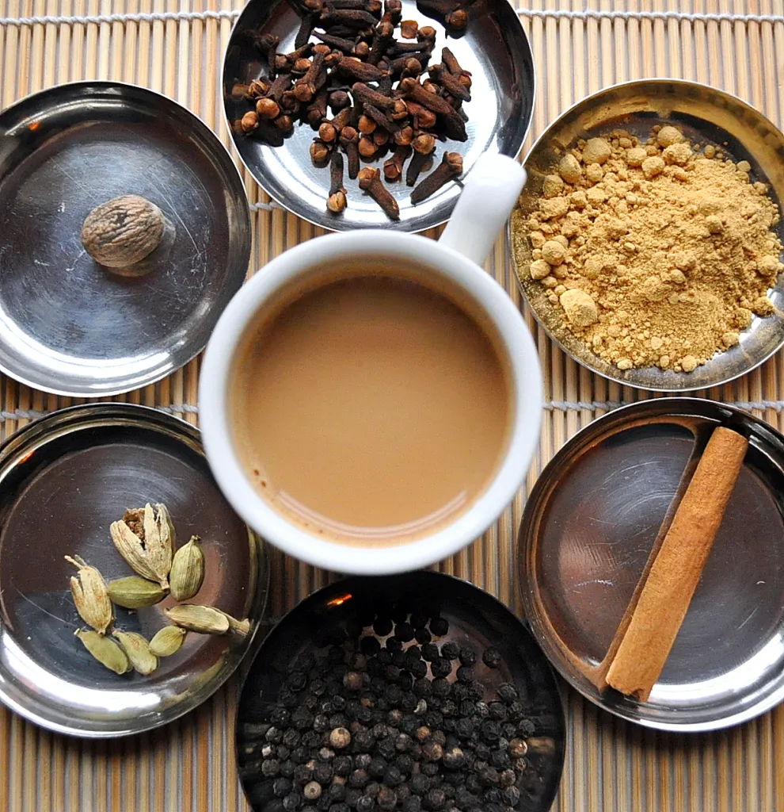

Chai

Chai has always been an integral part of our daily lives as well as our get togethers with friends and family.
The chai is sweet and spicy with a subtle burn at the back of the throat. It is, in a word, wonderful.
Ingredients
- 1 cup nonfat dry milk powder
- 1 cup powdered non-dairy creamer
- 1 cup French vanilla flavored powdered non-dairy creamer
- ½ cup water
- 2 ½ cups white sugar
- 1 ½ cups unsweetened instant tea
- 2 teaspoons ground cinnamon
- 2 teaspoons ground ginger
- 1 teaspoon black pepper powder
- 1 teaspoon ground cloves
- 1 teaspoon ground cardamom
Steps
- Gather the ingredients.
- Combine sugar, instant tea, milk powder, nondairy creamer, and vanilla-flavored creamer in a large bowl. Stir in ginger, cinnamon, cloves, and cardamom.
- Blend 1 cup at a time in a food processor or blender until a fine powder.
- Stir 2 heaping tablespoons chai tea mix into a mug of hot water for 1 serving.
- And guess what, Instant Chai is ready!
Back to homepage
Other Recepies